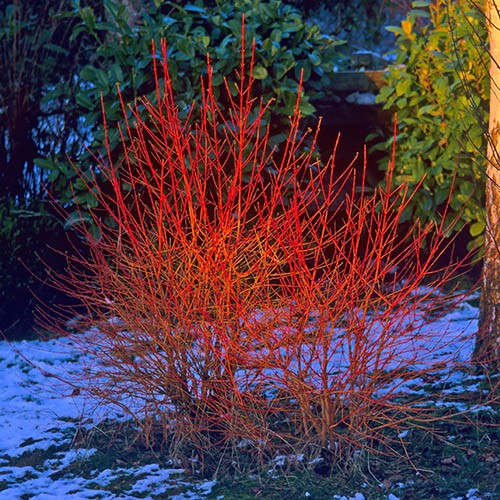
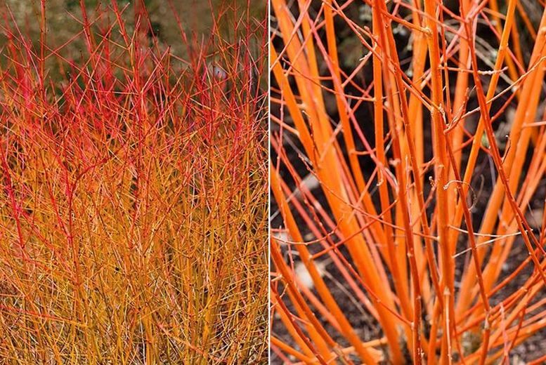

Common Name: dogwood
Botanical Name: Cornus
Chinese Name: 山茱萸

Cornus / dogwood |

Cornus / dogwood |

Cornus / dogwood |
|

Unusually vigorous, with reddish-brown winter twigs and among the best autumn leaf colour. |

The most popular variefated variety with white-edged leaves. Bright red winter stems and white fruits. |

Often slender stems of yellowish-green. Looks great alongside darker varieties. Happy in wet soil. |

One of the darkest, the stems are almost black. Red young shoots and purplish autumn colour too. |
Other references
RHS
Gardenia
Gardeners' World
They are tolerant of partial shade, however to attain the best colour they should be grown in full sun and left unpruned for the first year after planting. In early spring of their second year, cut all the stems back to within 5cm of the base, and at a similar time in subsequent years, the stems should be cut back to within two or three buds of the previous year’s growth before applying a generous mulch of composted farmyard manure.
A varied group of deciduous trees and shrubs offering great garden value and year-round attractions. Dogwoods can be structurally beautiful trees that light up the garden with their striking flower bracts in early summer, or brightly-coloured stems that provide winter cheer with their firework colours.